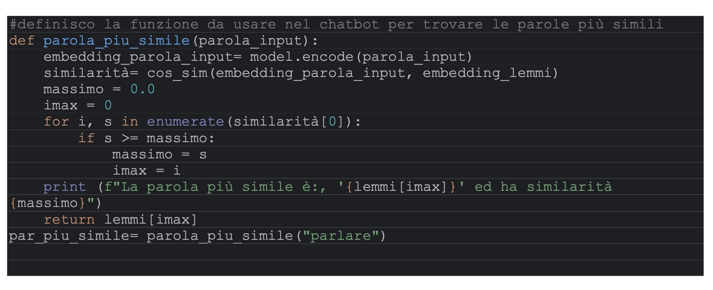

Per confrontare una parola fornita in input con i lemmi presenti nel testo, ho creato una funzione che lavora in due fasi. Nella prima fase, la funzione calcola l'embedding della parola inserita, utilizzando lo stesso modello già adottato in precedenza, ovvero "distiluse-base-multilingual-cased-v1".
Nella seconda fase, l'embedding appena ottenuto viene confrontato con tutti gli embedding dei lemmi del testo, in modo da trovare il lemma più simile dal punto di vista semantico.